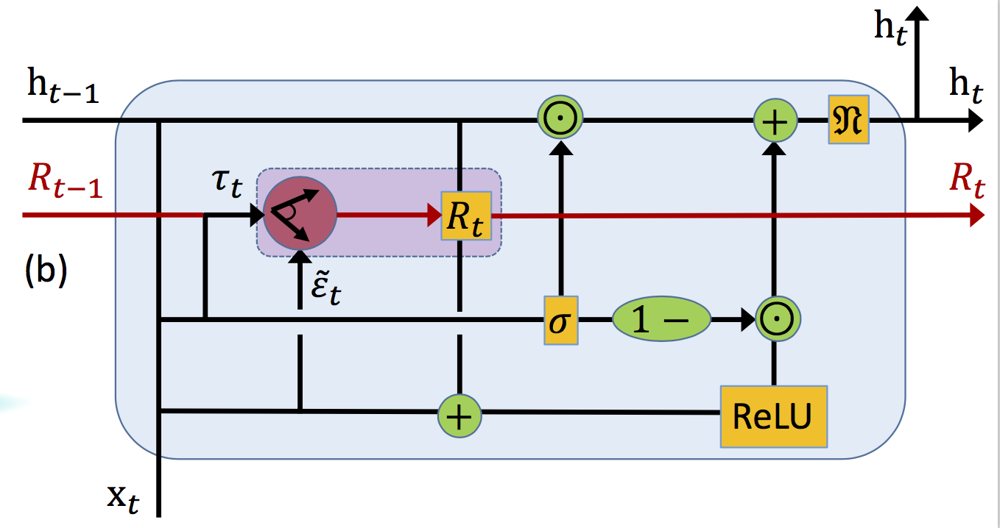
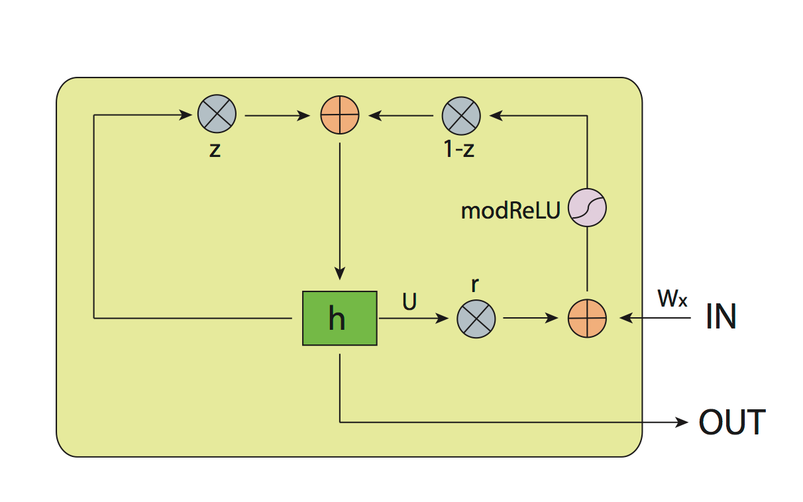
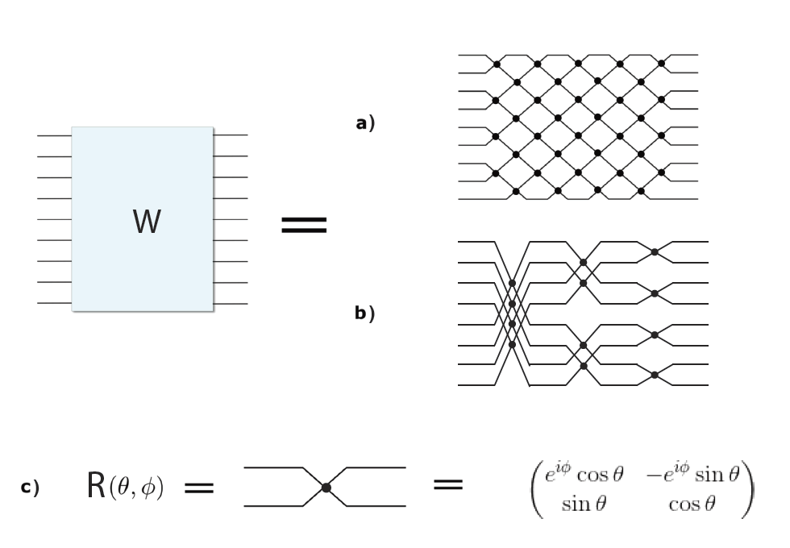

Li Jing 靖礼
Ph.D. candidate at MIT; Co-founder of Lightelligence Inc
Contact: ljing [at] mit.edu; li [at] lightelligence.ai
Ph.D. candidate at MIT; Co-founder of Lightelligence Inc
Contact: ljing [at] mit.edu; li [at] lightelligence.aiI am a senior Ph.D. student in MIT physics department. I work in Marin soljačić's group.
My research interests include Deep Learning and Applied Physics.
I received my B.S. in Physics and B.A. in Economics (Dual Major) from Peking University in 2014.
I won 2010 International Physics Olympiad (IPhO) Gold Medal representing China.
I am a co-founder of Lightelligence Inc.
Nanophotonic Particle Simulation and Inverse Design Using Artificial Neural Networks
Science Advance 2018


Gated Orthogonal Recurrent Units: On Learning to Forget
AAAI 2018 workshop

Tunable Efficient Unitary Neural Networks (EUNN) and their application to RNNs
ICML 2017
[PDF] [Poster] [Slides] [Webpage] [Code-Tensorflow] [Code-Theano]
Rumen Dangovski*, Li Jing*, Marin Soljačić
arxiv: 1710.09537
Li Jing*, Çağlar Gülçehre*, John Peurifoy, Yichen Shen, Max Tegmark, Marin Soljačić, Yoshua Bengio
arxiv: 1706.02761
John Peurifoy, Yichen Shen, Li Jing, Yi Yang, Fidel Cano-Renteria, Brendan Delacy, John D. Joannopoulos, Max Tegmark, Marin Soljačić
Science Advance. Vol. 4, no. 6, eaar4206 (2018).
Li Jing*, Yichen Shen*, Tena Dubček, John Peurifoy, Scott Skirlo, Yann LeCun, Max Tegmark, Marin Soljačić
Proceedings of the 34th International Conference on Machine Learning (ICML) (2017)
Heng Fan, Yi-Nan Wang, Li Jing, Jie-Dong Yue, Han-Duo Shi, Yong-Liang Zhang, Liang-Zhu Mu
Physics Reports 544 (3), 241-322 (2014)
Yong-Liang Zhang, Huan Wang, Li Jing, Liang-Zhu Mu, Heng Fan
Scientific Reports 4, 7390 (2014)
Yong-Liang Zhang, Yi-Nan Wang, Xiang-Ru Xiao, Li Jing, Liang-Zhu Mu, VE Korepin, Heng Fan
Physical Review A 87 (2), 022302 (2013)
Li Jing, Yi-Nan Wang, Han-Duo Shi, Liang-Zhu Mu, Heng Fan
Physical Review A 86 (6), 062315 (2012)
Zhao-Xi Xiong, Han-Duo Shi, Yi-Nan Wang, Li Jing, Jin Lei, Liang-Zhu Mu, Heng Fan
Physical Review A 85 (1), 012334 (2012)
Yi-Nan Wang, Han-Duo Shi, Li Jing, Zhao-Xi Xiong, Jin Lei, Liang-Zhu Mu, Heng Fan
Journal of Physics A: Mathematical and Theoretical 45 (2), 025304 (2012)
Yi-Nan Wang, Han-Duo Shi, Zhao-Xi Xiong, Li Jing, Xi-Jun Ren, Liang-Zhu Mu, Heng Fan
Physical Review A 84 (3), 034302 (2011)